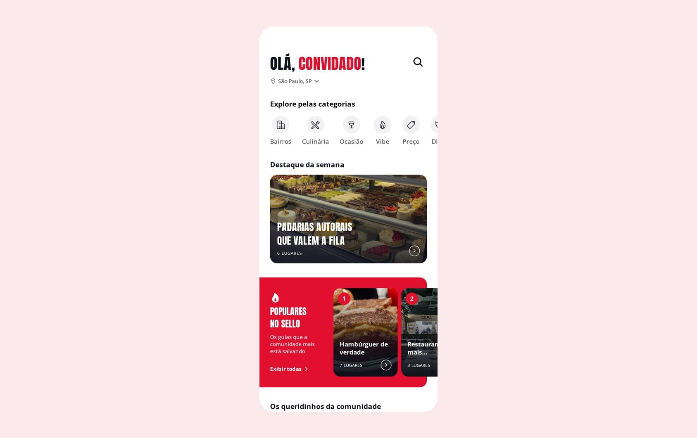
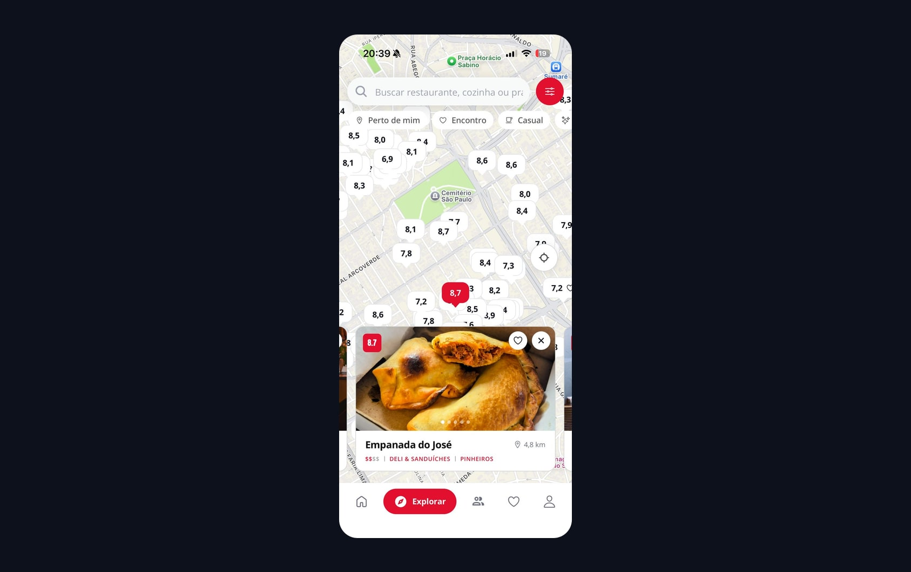
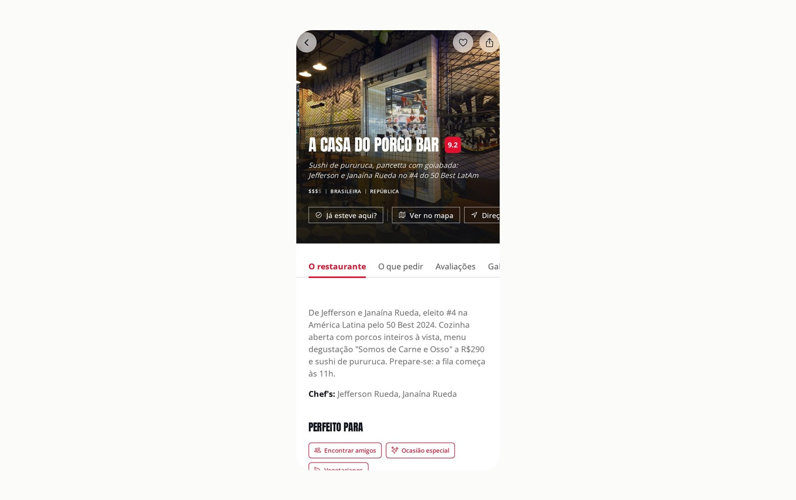
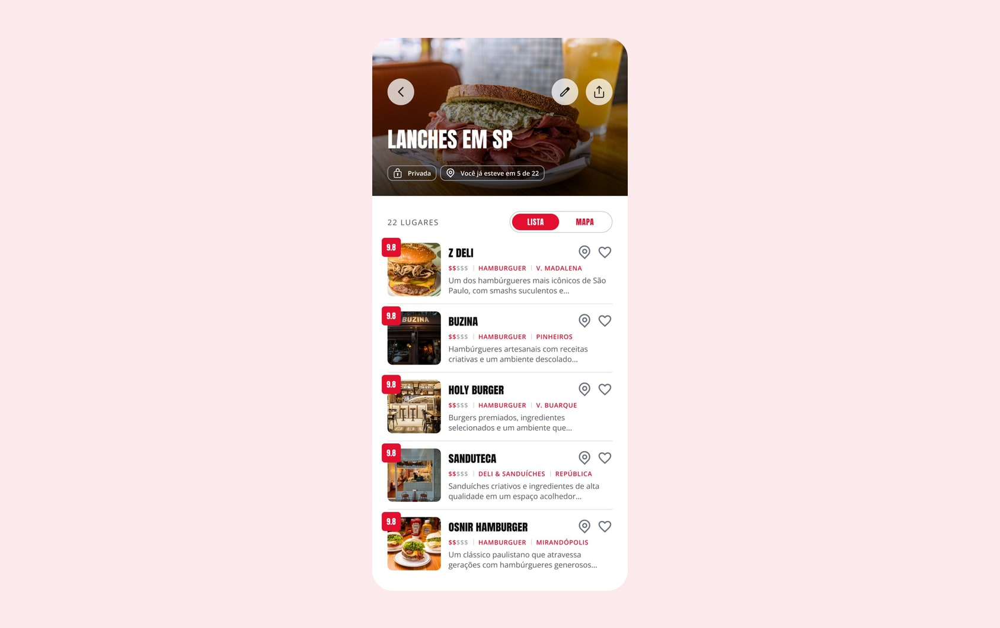

Curated restaurant discovery for São Paulo — editorial selection, a community that keeps it honest, and a score that explains where it came from.
Every platform is confident, and they all disagree. Instagram calls it the best in the city. TikTok has something more unmissable. On Maps everything is a 4.8. The group chat says "didn't love it, try another."
You end the search with more doubt than you started with. Sello is built on the opposite premise: fewer places, checked, with the reasoning visible.
When every restaurant scores 4.8, the score has stopped carrying information.
The Sello Score is deliberately not a single source. It combines four, so that no one of them can be gamed alone.
Not every restaurant gets in. The team researches, visits and selects — fewer recommendations, but the right ones.
The people who actually went keep it current, showing how a place delivers in practice.
Reviews, awards and industry lists — the trail a good restaurant leaves behind.
The layer that reads all of the above and turns scattered signals into one number that can be explained.
Each one feeds the next: discovery produces opinions, and opinions improve discovery.
Live on the App Store and Google Play, launched in São Paulo.



